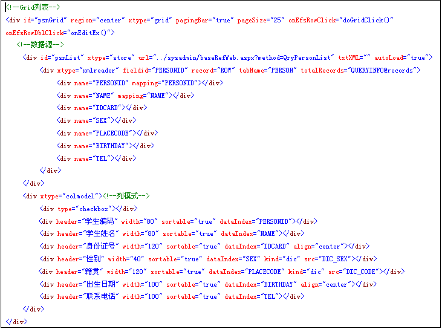
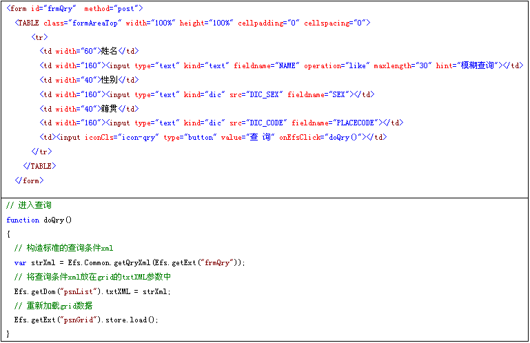

构造添加的实例代码：

特别说明：
1、grid中的pagingBar表示是否显示分页栏，pageSize表示每页显示多少条数据；
2、store中的url 指向异步获取列表数据的后台指向地址；
3、store中的autoLoad 表示是否自动加载数据；
4、xmlreader中的record表示读取返回XML数据中列的根节点；
5、xmlreader下每一个div代表一列，根据其mapping来获取xml节点的值，如果mapping为空，则自动根据name来获取节点值；
6、colmodel下的每一个div表示对应的列的表现模式，header表示列头名称，dataIndex与xmlreader中的name对应；
7、colmodel下的第一个div，如果其type为checkbox表示为可多选的行，表头会出现全线框，如果为radio则表示单选行，默认为单选行模式；
8、colmodel下的div如果将其kind属性这是为dic，并同时给出src的字典名称，说明改列需要做相应的字典翻译，Efs会自动在客户端列表中完成字典翻译处理，省去了服务端字典翻译的功能；
9、grid中的onEfsRowClick， onEfsRowDblClick分别表示单击事件和双击事件，具体的事件返回参数类型，请参考：
行单击事件：
onEfsRowClick:(Object data,Grid this, Number rowIndex, Ext.EventObject e )
参数说明：Object data: 通过data[xmlreader的name]获取数据,如：data["PERSONID"] 获取人员编号，以下相同；
行双击事件：
onEfsRowDblClick: (Object data,Grid this, Number rowIndex, Ext.EventObject e )
单元格单击事件：
onEfsCellClick : ( Object data,Grid this, Number rowIndex, Number columnIndex,Ext.EventObject e )
单元格双击事件：
onEfsCellDblClick : (Object data,Grid this, Number rowIndex, Number columnIndex,Ext.EventObject e )
构造查询条件进行有条件查询

备注说明：
1、Efs.Common.getQryXml(Efs.getExt("frmQry"))方法是将指定的frmQry表单中所有不为空的表单域根据fieldname构造出标准的查询型xml（查询型xml请参考《EfsFrame框架标准数据交换XML结构说明》）；
2、根据id，获得grid的div对象的txtXML属性设置为标准的查询型XML，如：Efs.getDom("psnList").txtXML = strXml；
3、重新加载grid的数据，即可完成，如Efs.getExt("psnGrid").store.load()；
当空条件查询的时候，可以设置Efs.getDom("psnList").txtXML = Efs.Common.getQryXml()即可，Efs.Common.getQryXml()获得的是一个空条件的查询型XML；